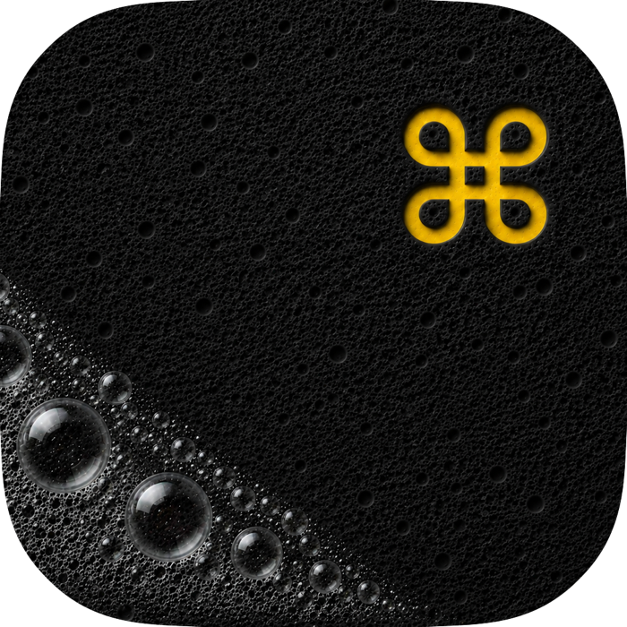

Keyboard Lock
Suppresses accidental key input while cleaning your keyboard.
Lock your keyboard.
Clean your Mac.
A native macOS utility that blocks accidental keyboard and trackpad input while you clean your Mac. Unlock safely when you are done.

Features
Suppresses accidental key input while cleaning your keyboard.
Helps avoid cursor movement and clicks while wiping your MacBook.
Start and stop cleaning mode from the macOS menu bar.
Unlock from the app controls, with escape-key recovery support.
Visual feedback helps you see what keys have been touched.
No accounts, no analytics, and no personal data collection.
Technical Build
Native menu bar popover, onboarding, virtual keyboard, and trackpad interface.
Uses a CGEvent session tap to suppress keyDown, keyUp, and modifier events while cleaning mode is active.
Detects input devices and supports hardware-aware keyboard and external mouse workflows.
Guides users through Accessibility and Input Monitoring permissions required for input blocking.
Tracks an ANSI keyboard layout with visual cleaning feedback and escape-key recovery.
No keystroke storage, analytics, accounts, or custom backend services.
Privacy
KeyClean uses macOS system permissions only to block input while cleaning. It does not record keystrokes, send analytics, or connect to a custom backend.